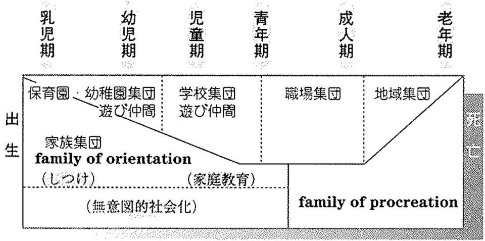
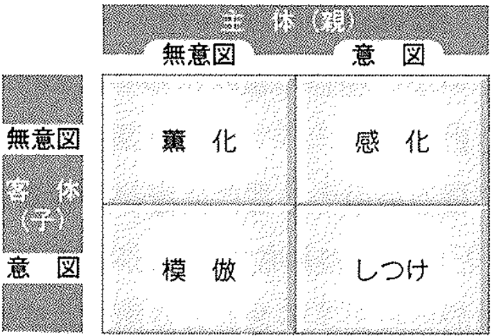
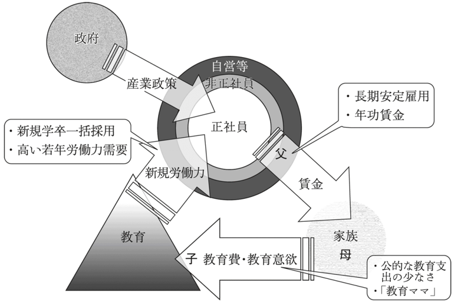

5 社会化（3）：家族と子ども
社会における教育の役割
授業で使用するスライドです。右下のボタンから全画面表示（Fキー）も可能です。
5.1 コメントへのフィードバック
前回の授業（「社会化（2）：教育とジェンダー」）で提出してもらったコメントへのフィードバック
最近気づいたジェンダーに関する先入観や固定観念
- 男性が家事や育児を積極的にしていると「すごい」「いい旦那さんだな」と思ってしまうことがある。でも、女性が同じことをしていても特別すごいとは思わないので、自分の中にも家事や育児は女性がするものという固定観念が残っているのだと気づいた。普段は性別による役割分担に違和感を持っていても、無意識のうちにそうした考え方をしてしまうことがあると感じた。
- 自分の中に、男性は理系が得意で、女性は文系が得意というイメージが少なからずあることに気づいた。もちろん、実際には性別によって能力が決まるわけではないが、周囲のイメージやこれまでの経験によって、無意識にそのような考え方をしてしまうことがあると感じた。
- 私のなかでジェンダーの固定観念は、男性は化粧やメイクをしないという固定観念がありました。ただ、最近メンズメイクなどを知って男性だからこうという固定観念はよくないと思いました。
- 営業活動をする中で、最初は夫が家庭の契約や支払いを決める立場だと思い込んでいたが、実際には妻が決定権を持っている家庭も多いことに気づいた。
- 海外の建設現場の映像で、大型重機を女性作業員がごく自然に操作している姿を見た際、自分の中に「現場作業や重労働＝男性の仕事」という無意識の固定観念があったことに気づかされた。日本では特定の職業における男女比に偏りがあるため、知らず知らずのうちに職業と性別を結びつけて考えていたと実感した。国や文化によって「当たり前」とされる職業像が大きく異なることを知った。
- ルミネなどの商業施設や駅の女性トイレを男性スタッフが清掃していることに驚き、女性トイレの清掃は女性が担当するものだという先入観があったことに気づいた。また、大学でメイクをしている男性を多く見かけることや、デパートの化粧品売り場に男性の美容部員がいたことからも、無意識に美容は女性のものだと考えていたことに気づいた。
- 私は家事や料理は女性の方が得意で、自然と女性が中心になって行うものというイメージを持っていたことに気づいた。実際には性別に関係なく得意不得意があるし、男性が料理や家事を中心になって行っても何もおかしくない。それなのに、家庭料理を作る人や子どもの世話をする人を考えたときに母親の姿を思い浮かべてしまうのは、これまでの生活の中で身についた固定観念なのだと思った。自分では男女を区別しているつもりがなくても、無意識のうちに性別によって役割を決めつけてしまうことがあるため、当たり前だと思っている考え方を見直すことが大切だと感じた。
- 大教室での講義で室温が高く暑いと感じたとき、女性講師だから仕方ないと納得していた。小中学校の頃から女子は寒がりというイメージが染み付いていたためだと思う。無意識のうちに、性別による体感温度の違いを当たり前のものとして考えていた。
- バイト先の結婚式場で、打ち合わせに来た新郎新婦への話し方が無意識に違っていたことに最近気づいた。料理やお花、ドレスの話はつい新婦の方を見て話していて、見積もりや支払いの話になると新郎の方を向いていた。誰かに教わったわけではなく、自然にそうなっていたのが逆に怖いと思った。実際には新郎の方が装花にこだわっていたり、新婦が予算を全部管理していたりする夫婦も普通にいる。「結婚式は花嫁が主役で、お金のことは男性が決める」というイメージを自分も持っていたんだと思う。また、中高が男子校だったので、行事の準備で重い物を運ぶのも装飾を作るのも全部男子でやっていた。しかし、大学に入ってからは、力仕事を男子が自然に引き受けて、細かい作業を女子がやる流れになっていることが多い。男子校のときは特に疑問を持たなかったけど、環境に女子がいるだけで役割分担が性別で決まってしまうのは面白いと思った。
- これまで色々な飲食店でアルバイトをする中で、ホールは男女ともにいる一方、キッチンは男性が多いことに気づきました。昔ながらの価値観では「家庭で料理をするのは女性」というイメージがあるのに、料理が仕事になると男性が多くなるのは少し不思議だと感じました。自分自身も「料理＝女性」というイメージを持っていたため、家庭内の役割と職業としての料理ではジェンダー・イメージが異なることに気づきました。
- ある会社のアソシエイト職（営業事務）の社員座談会行った際、事務職なので女性しかいないと思っていたが、一枚男性がいで驚いた。
- 私が最近自覚したジェンダーに関する固定観念は、組織のリーダーや責任者には男性が就くことが多いという認識である。大学の部活動や組織運営において、代表者や意思決定者を無意識に男性として想像している自分に気づいた。しかし、リーダーに求められる判断力や調整力、周囲を巻き込む力は性別によって決まるものではない。このような認識が生まれる背景には、これまで社会で目にしてきた男性中心の組織構造や、メディアにおけるリーダー像の影響があると考える。つまり、自分では性別による区別をしていないつもりでも、社会の中で繰り返し接してきた情報が、無意識の判断基準を形成している可能性がある。今回の気づきを通して、ジェンダーに関する固定観念は、個人の意識だけでなく、社会的な経験や環境によって再生産されるものだと感じた。今後は、自分の判断に性別による思い込みが含まれていないかを意識し、個人の能力や行動そのものに目を向けたい。
- 最近自覚したジェンダーは、フィリピンの病院に行ったときに診てもらった医者は男性で、看護師さんは女性であった。日本に限らずこういった職業ジェンダー格差は世界にも散財するということを身にしみて感じた。女子はお金持ちと結婚すれば働かなくてもいいよねとたまに言われることがあるが、あまり言われて気分が良くなることではないと感じる。
- 私は、スポーツの場面では、男性の方が力が強く、リーダーに向いていると思い込んでいる部分があると感じた。例えば、野球部では、監督や主将などの中心的な役割は男性が務めることが多く、自然と男性がリーダーになるものだと考えてしまいがちである。しかし、実際には性別に関係なく、判断力や責任感、周囲をまとめる力がある人がリーダーに向いているはずだ。自分の中にも、社会で当たり前とされている考え方から生まれた固定観念があることに気づいた。今後は、性別だけで人の能力や役割を判断しないようにしたい。
- 最近私が感じたジェンダーに関する先入観は、ゲイは大体こういう人だと感じてしまった瞬間です。今では、ゲイのYouTuberが話題になることが多く、その明るさや面白さが好きなのですが、その姿が多くの場合似ているため、ゲイはみんなこんな感じなのかなと考えてしまいました。しかし、そう｢ゲイは｣｢ゲイだから｣と考えている時点で、私はジェンダーに関してなにか区切りをつけて見ていると気が付きました。
- 最近、飲食店で働く中で、料理や接客などの仕事に対して、無意識に男女で向き不向きがあると考えてしまうことがあると気づいた。例えば、力仕事は男性の方が得意で、細かい気配りや接客は女性の方が得意というイメージである。しかし、実際には個人の経験や能力による違いが大きく、性別だけで判断することは適切ではないと感じた。自分では男女平等だと考えていても、普段の生活の中で無意識に性別による役割分担を想定していることがあるのだと思った。
- 私が最近感じたジェンダーに関する先入観は、料理や洗濯などの家事は女性の方が得意で、男性はあまり得意ではないというイメージを無意識に持っていたことだ。例えば、料理が上手な女性を見ると特に驚かない一方で、料理が得意な男性を見ると、すごいと感じることがある。しかし、家事の得意不得意は性別によって決まるものではなく、経験や環境によって変わるものだと思う。こうした自分の反応を振り返ると、普段は意識していなくても、社会の中で作られた固定観念が自分の考え方に影響していることに気づいた。今後は、性別だけで相手の特徴や役割を決めつけず、一人ひとりの個性や経験に目を向けたい。
- テレビ番組で「G1を制覇した女性ジョッキー」が特集されていたことを見て、競馬の騎手は男性が活躍しているイメージだったが、女性も活躍していることを知った。
- 私は、眼科に行ったときにジェンダーに関する先入観を自覚しました。眼圧を測ったり、視力検査をしたりしてくれる看護師さんは今までは女性の方が多かったです。しかし、先日男性の方にあたり、なんとなく違和感を抱いてしまいました。
- 私は沖縄県出身で、母の実家がとても田舎にあります。母は９人兄弟で、女８男１の特殊な家庭です。親戚の集まりに行くと、必ず女性がキッチンで様々な作業をし、男性が居間でテレビを見て休むという状況が広がっています。私も女性なので母にキッチンで手伝いするように言われたり、居間に料理をもっていくように言われたりしました。私と同い年の男性の従妹はゆっくり休んだり、ゲームしたりしているのを見て、少しイラっとしたことがあります。
- 最近、電車やタクシーで女性が運転士として働いているのを見て、乗り物を運転する仕事は男性が多いというイメージを自分が持っていることに気づいた。無意識に仕事と性別を結びつけて考えていたと感じた。
- バスの運転手さんが女性だった時は珍しいなと少し驚いてしまう。弟が学校で先生に（苗字）さん、と呼ばれていると聞いたとき違和感を持った。フルートやクラリネットを担当するのは女子、というイメージが強い。
- 電車の車掌さんが女性の方だった。バイト先の店長が転勤になり新しい店長が入ってくるときに勝手に男性の方が来ると思っていたが女性の方だった。サークルの女子の先輩が理学部だと知って驚いた。
- 病院で男性の看護師がいると、最初の印象として、女性ではないことに驚いてしまうこと。
- 女性は男性より多くの食事をするのは、恥ずかしいと考えていたこと。
- 異性の友人が、可愛いネイルや、メイクをしていて、それらは女性しかしないと考えていたのですが、実際はそんなことないと感じました。
- 客室乗務員になりたいと話をしていた時、異性の友人に以前僕もなりたかったと聞き、私の中では客室乗務員は女性の仕事という固定概念を持っていたと気がつきました。
- 本日の講義で、外科医のお話があったと思うのですが、私は奥さんが不倫をしているか、多様性の時代なので同性カップルなのかと考えたのですが、実際は外科医が女性であるが正解だった為、自分の中で外科医と聞くと男性の職業だと潜在的に考えていたことがわかりました。
- 男性アイドルグループのライブに行ったときに、いつもは客がほとんど女性だけだったが、男性が一人で来ているのに気づいたときは、「あ、男性ファンもいるんだ」と無意識に思ってしまう。
- 小学生の女の子で一人称が「僕」の子がいて違和感を持った。看護の大学に行った友人の友達の話を女性だと思って聞いていたが、男性だった。
- Yahooニュースの記事が、Xで反響が大きかった。（一部の引用）『発端となったのは、5歳の男の子を育てる保護者によるXの投稿でした。息子にランドセルの希望を数か月前から繰り返し尋ねると、答えは一貫して「赤」。本人の意思を尊重したいものの、男の子が赤いランドセルを持つことで、いじめのきっかけになるのではないかと心配し、購入に踏み切れないという切実な思いが明かされていました。』私たちの世代は赤いランドセルがいじめのきっかけになるという発想がないので、へぇーと思った。でも、普段からそこまで意識することがない、あってもそれは年上の人の指摘で気づいたりするものなので、書くのに困った。
- この前歯医者に行ったら男性の歯科衛生士さんが対応しているのを見かけました。歯科衛生士といえば女性をイメージしていた私は、無意識な固定概念を持っていたことに気づきました。
- 電車の車掌さんが女性の方だった。バイト先の店長が転勤になり、新しい店長が入ってきたときに、勝手に男性だと思っていたが女性の方が来た。サークルの女子の先輩が理学部だと知って驚いた。
- この前歯医者に行ったら男性の歯科衛生士さんが対応しているのを見かけました。歯科衛生士といえば女性をイメージしていた私は、無意識な固定概念を持っていたことに気づきました。
- 入院してる時に、男性看護師が何人かいて、「なんでこの人は看護師になろうと思ったんだろう……（男の人なのに）」と思った。
多数派の共通コメント：職業や社会的役割における「無意識のトラッキング」
多くの学生の気づきは、主に「特定の職業」や「家庭内・社会的な役割」において、無意識に性別を割り当てていた瞬間に集中していた。
- ケア・医療・美容領域における思い込み｜
- 「看護師や歯科衛生士＝女性」「医師＝男性」「美容部員やメイクは女性のもの」というイメージを無意識に持っていた。実際に病院で男性の看護師・歯科衛生士に出会ったり、デパートで男性の美容部員を見かけたりした際に「ハッとした」「最初は驚いた」という経験が多数挙げられた。
- 技術・インフラ・意思決定領域における思い込み｜
- 建設現場の重機オペレーターや電車の運転士・車掌、トラック・バスの運転手などを無意識に「男性の仕事」として想定していたことや、アルバイト先で新しい店長が着任する際や部活・サークルの代表者・リーダーを自然と「男性」だと思い込んでいたという気づき。
- 家庭内の役割分担と称賛の非対称性｜
- 「料理や家事は女性が中心になって担うもの」という通念が根底にあるため、男性が家事や育児に積極的だと「すごい」「いい旦那さん・いいお父さんだな」と特別視・称賛してしまう一方で、女性が同じことをしていても当たり前として受け流してしまうという、評価や期待の非対称性に自覚的になったという声。
少数派・特筆すべき鋭い着眼点
日常の身近な観察にとどまらず、環境の比較や構造的な要因に踏み込んだ視点
- 国・文化や空間の違いによる「当たり前」の相対化｜
- 「海外の建設現場で女性が大型重機を自然に操作している姿を見て、日本国内の職業ジェンダー格差の偏りに気づいた」という指摘。文化や社会環境によって「男らしさ／女らしさ」の境界線が大きく異なることが相対的に捉えられている。
- 集団構成の変化に伴う役割分担の発生｜
- 「男子校時代は力仕事も装飾作りもすべて男子だけでやっていたのに、大学に入って共学の環境になると、自然と力仕事は男子、細かな装飾作業は女子という役割分担が定着してしまった」という実体験。本人の意志とは別に、男女が混在する空間になるとジェンダー規範が作動し始めるダイナミズムを示唆。
- 同様に、ブライダルバイトにおいて「料理やドレスの話は新婦を向き、見積もりや費用の話になると無意識に新郎を向いて話していた」という、現場での接客行動に知らず知らずのうちにバイアスが表出していたという自己分析。
- 身体感覚や日常の違和感への着眼｜
- 「大教室で室温が高くて暑いと感じた際、『女性講師だから（寒がりで高めに設定しているのかも）と無意識に納得していた』」という、室温という身体感覚にまでジェンダー・イメージを結びつけていたことへの気づき。
- なお、体感温度に関しては、筋肉量が少ない方が寒く感じやすいため、身体的な特徴によって体感温度の性差は実際に存在すると考えることもできる。現代的なジェンダー観では、そのような平均的な男女差はあるが、同時により大きな個人差があるといった考え方をとることが多いように思われる
- 「男の子が赤いランドセルを欲しがった際に親がいじめを心配したというネットニュース」に触れ、自分たちの世代では色の自由が広がっている一方で、親世代の不安や規範意識とのギャップに目を向けた指摘。
- 「大教室で室温が高くて暑いと感じた際、『女性講師だから（寒がりで高めに設定しているのかも）と無意識に納得していた』」という、室温という身体感覚にまでジェンダー・イメージを結びつけていたことへの気づき。
講義としてのまとめ・教育社会学的な分析
学生たちのコメントから浮かび上がるのは、悪意や差別意識からではなく、日常の経験やメディアを通じて無意識のうちに「誰がどのポジションにいるべきか」という認知的スキーマが作られているという事実である。
現代の学生は、幼少期（2000年代後半・2010年代）から「男女共同参画」や「多様性（ダイバーシティ）」の理念が掲げられる中で育ち、メンズメイクや男性の育児参加が珍しいとはされつつも広がる時代を生きている。そのため、「自分は性差別をしないフラットな人間だ」と自認している人が多い。だからこそ、ふとした瞬間に自分の頭に浮かんだ「男性看護師や女性運転士に対する一瞬の違和感」にハッと気づくことができるという、極めて繊細で客観的な感性を持っている。
親世代やそれ以前の社会に比べれば、法制度や外形的な障壁は大幅に改善されてきた。しかしだからこそ、制度が整った現代においては、私たちの無意識の「内面化されたジェンダー・イメージ」が、個人の進路選択や生き方を制約する最後の大きな見えない壁として立ち現れているといえる。
理系への進学のジェンダーギャップをどう解消するか
- 理系分野で活躍している女性の話を聞く機会を増やすことが有効だと思う。身近にロールモデルがいないと、興味があっても自分がその分野に進むイメージを持ちにくいと思う。また、女子は文系、男子は理系といったイメージを教師や保護者が無意識に与えないことも大切だと思う。ただ、女子の理系進学者を増やすこと自体を目的にするのではなく、性別に関係なく自分の興味や得意なことから進路を選べる環境をつくることが重要だと考える。
- 女子の理工系学部への進学者を増やすためには、女子中高生が理系分野に触れる機会を増やすことが有効だと考える。例えば、女性研究者や理系分野で活躍する女性と交流する機会を設けることで、理系は男性が多いというイメージを変えられると思う。また、学校や家庭で性別による進路の決めつけをなくすことも重要である。本人の興味や適性に基づいて進路を選べる環境を整える必要がある。
- 必要ないと感じました。なぜなら、そういう政策で特別枠という名の女子枠というのがあってこれらがジェンダー差別に当たると感じたからです。結局このようなかんじの政策は必ず差別に当たるからよくないと感じます。
- 小さい頃から理系の仕事で活躍する女性を紹介したり、理系科目は男子向きというイメージをなくす教育が有効だと思う。性別に関係なく、自分の興味や得意分野で進路を選べる環境を整えることが大切だと考える。
- 女子枠（特別入試）や奨学金の拡充：理工系大学における「女子枠入試」の導入・拡大や、返済不要の給付型奨学金を拡充することで、進学の経済的・心理的ハードルを下げる。
- 理工系学部への女子の進学者を増やすためには、理系の女性を主人公にしたドラマや映画を制作し、理系に対するイメージを変えることが有効だと考える。また、女子学生を対象に学費の減額や奨学金制度を設けることも一つの方法だと思う。しかし、私は女子の理系進学者を無理に増やす必要はないと考える。進路は本人の興味や意思によって決めるべきだからだ。一方で、女子が理系に進むことに特別な覚悟が必要だと感じる環境には問題があると思う。そのため、女子の進学者数を増やすことよりも、性別に関係なく自由に進路を選べる環境を整えることが大切だと考える。
- 女子が理工系学部への進学を選びやすくするためには、理系は男性に向いているという固定観念をなくすことが大切だと思う。例えば、女性の研究者や技術者の話を聞く機会をつくったり、実験やものづくりを体験できる授業を増やしたりすることで、女子が理系を身近に感じられるようになると考える。また、親や先生が無意識に女子には文系が向いていると思い込んで進路を勧めてしまうこともあるため、周囲の大人の意識を変えることも必要だと思う。私は、女子の進学者を増やすための取り組みは必要だと考えるが、女子の人数を増やすことだけが目的なのではなく、性別に関係なく自分の興味や得意なことをもとに進路を選べる環境を整えることが重要だと感じた。
- 私は、理工系学部への女子の進学者を無理に増やす必要はないと考える。古くからこのような形が取られているのは、データ以上のなにかがあり、自然淘汰のような形であるべき形に収まったのだと思う。ただ、理系を志望する女子を増やす必要はなくとも、性別を理由に進学を妨げられない環境は必要だと思う。
- 有効だと思う取り組みはいくつかある。まず、高校の段階でロールモデルに触れる機会を増やすこと。資料にあったように高校の女性教員の比率は33.8%で、理科や数学の先生となるともっと少ない印象がある。女性の理系の先生や、理系に進んだ大学生の女性先輩と話す機会があれば、「理系＝男子」というイメージは少し崩れると思う。次に、文理選択の時期を遅らせること。日本では高1の終わりくらいで文理を選ばされることが多いが、その時点では授業で書かれていたような教科への自己効力感の差がそのまま進路に直結してしまう。選ぶ時期を後ろにずらしたり、文理の区分自体をゆるくしたりすれば、思い込みで可能性を閉じてしまうことは減ると思う。さらに、保護者向けの働きかけも必要だと思う。寺町（2022）の話のように、特に地方では親が女子に自宅通学や短大を勧める傾向があるので、本人の意識だけを変えても限界がある。最近いくつかの大学で導入されている理工系の「女子枠」も、入口を広げるという意味では一定の効果があると思う。ただ、そもそもこういう取り組みが必要なのかという点については少し迷う。女子が理系を選ばないのが本人の自由な選択の結果なら、無理に増やす必要はないとも言える。でも、その「自由な選択」自体が、小さい頃からのおもちゃや周りの声かけ、学校の慣行によって形づくられている以上、本当に自由とは言いにくいと思う。なので取り組み自体は必要だと思うが、女子枠のように「女子だから入れた」と見られかねない方法は、授業で出てきたスティグマを逆に生んでしまう危険もある。理系の女子を増やすこと自体を目的にするより、性別によって選択肢が狭められている状態をなくすことを目的にした方がいいと思う。
- 女子の理系進学を増やすには、理系に進んだ先で得られるメリットをもっと大きくすることが有効だと思います。例えば、専門性を生かして長く働けたり、出産などで仕事を離れても復帰しやすかったりする環境が整えば、理系を選ぶことの魅力も高まると思います。進学時だけ働きかけるのではなく、その先のキャリアまで含めて変えていくことが必要だと思います。また、私自身就活で自己分析を深めたことで将来の像（こんな価値観を持っているから仕事ではこんなことをしたい、、など）が見えてきたので、高校生の時にも同じように自分に対する理解と将来を考える時間を提供することで、単に数学が苦手だから文系を選択する、といったケースも減るのではないかと思いました。 理系にすすんだ女性のキャリアや人生の話を聞く機会を増やすこと。学校の集会やテレビやインターネットなどで。
- 女子の理工系進学者を増やすためには、進学段階での支援だけでなく、理系への関心や自己評価が形成される過程に着目する必要があると考える。具体的には、第一に、小中学生の段階から性別に関係なく科学や技術に触れられる体験型授業を充実させることである。「理系は男性が得意」という固定観念が形成される前に、多様な分野への興味を育むことが重要である。第二に、女性研究者や技術者との交流機会を設け、将来の進路や働き方を具体的に想像できるようにすることである。第三に、教員や保護者に対してもジェンダーに関する無意識の偏見への理解を促し、性別によって進路への期待や助言が異ならない環境を整える必要がある。ただし、女子の進学者数を増やすこと自体を目的化すべきではない。重要なのは、本人の興味や能力ではなく、社会的な固定観念によって進路の選択肢が狭められている状況を改善することである。また、女子学生を特別扱いするだけでは、かえって「女性は理系に向いていない」という認識を強化する可能性もある。したがって、単なる人数の増加ではなく、性別に左右されず誰もが希望する進路を選択できる環境を実現することが、本質的な目標であると考える。
- 高校で文理選択をさせるのではなく、教育界全体で文理融合型の制度を取り入れて、大学受験の際にどのような学問に行きたいのかを決めるのがいいと思う。文理選択でクラス分けされる場合も多く、文系は女子の方が多く理系は男子の方が多いということがあるが、文系理系という概念をなくせば少しずつ固定観念も薄れるのではないか。
- 女子が理工系学部への進学を選びやすくするためには、幼い頃から理系に触れる機会を増やすことが大切だと考える。例えば、女性の研究者や技術者の話を聞く機会をつくったり、女子中高生向けの実験教室を開いたりすることで、理系は男性が多い分野というイメージを変えられると思う。また、周囲の大人が「理系は男子向き」といった考え方を持たず、本人の興味や得意なことを尊重することも重要である。ただし、女子の進学者を増やすことだけを目標にするのではなく、性別に関係なく、誰もが自分の興味や能力に合った進路を選べる環境をつくることが大切だと思う。その結果として女子の理工系進学者が増えることが望ましいと考える。
- 女子学生が理系を選びにくい原因として考えられるのは、周りからの意見が大きいのではないかと思いました。現代では男女によって頭の出来をどうこう言う人は減っていると考えられるため、今後必要な取り組みは、女の子でも理系に行くのは普通だ、好きなことを選ぶべきだと言う考えを肯定することが大事だと思います。
- 女子の理工系学部への進学者を増やすためには、小さい頃から理系の仕事や学問に触れる機会を増やすことが有効だと考える。例えば、女性の研究者や技術者の話を聞く機会を設けたり、女子中高生向けの実験教室を開催したりすることで、理系は男性が多い分野というイメージを変えられるのではないか。また、学校の授業で男女を問わず理系分野への興味や能力を伸ばせるようにすることも重要だと思う。本人の興味や得意分野ではなく、周囲のイメージや性別によって進路の選択肢が狭まってしまうことは問題であるため、誰もが自由に進路を選べる環境を整える必要がある。
- 女子が理工系学部に進学しやすくするためには、小さい頃から理科や数学に触れる機会を増やすことが有効だと思う。例えば、女子中高生を対象にした実験教室や、理工系で活躍する女性と交流できる機会を設けることで、理系は男性が多いというイメージを変えられるのではないか。また、学校の先生や親が無意識に「男子は理系、女子は文系」と考え、進路選択に影響を与えていないかを見直すことも大切だと思う。ただし、女子の進学者を増やすことだけを目的にするのではなく、本人が興味や適性に応じて自由に進路を選べる環境を整えることが重要だと考える。性別に関係なく選択肢が保障されていれば、結果として女子の進学者が増えることにもつながると思う。
- 大学入試のために求められる高校での極端な文理選択をなくすことが有効なのではないか。私の通っていた高校では高2時点で文理に分けられ、そこからのコース変更は原則不可能だった。学校での科目のコマ数も文系と理系で明確に分けられており、その時は当たり前のことだと特に気に留めていなかったが、今考えてみれば、文理選択をした時点で自分の学ぶ範囲と共に選択できる範囲も限られてしまったと捉えることが出来るかもしれないと思っている。文系は数学なし、理系は国語なしとしてしまう極端な文理選択でのコースカリキュラムは女子の理工学部系への選択を妨げてしまっている一つの要因なのではないと考える。
- 理工系学部への女子の進学者を増やすには、その道を進んだ先輩が実際にお話ししてくれる説明会を開くという取り組みが有効だと思います。女子にとっては、理工系学部に行った仲良い先輩がいない限りイメージがつきにくいです。そのため、具体的な様子を知って興味を持ってもらうために、そのような説明会があると良いとおもいます。
- 今までに、女性が理工学系へ進学して成功したロールモデルが文系の女性に比べた時に少ないと感じるので、世界各地から成功したロールモデルを女子中学生・高校生に紹介する。
- 女子は文系、男子は理系というイメージをなくすことが最重要だと考える。小さい頃から性別に関係なく科学や技術に触れる機会を増やし、理系分野で活躍する女性を紹介することで、女子も理系に進むことが自然な選択肢になる社会を目指すべきだと思う。
- 家族生活の中で、様々なことに触れさせ経験させ、子ども自身の興味があるものを否定しない教育方針にする。学校教育でも、子どもが自分で自分の可能性を狭める（ジェンダーによって諦めたり）することが少なくなるような方針をとる。
- 昔のように故意に女性の理系進学率を下げるような制度は廃止されているので、無理に女性を増やそうと取り組まなくても自然と増えていくと思う。男性と女性では進学後、就職後のライフコースも大きく異なるし、数学や理科が楽しいと思えたり得意である人が性別に関わらずに理系に進学すればいいと思う。
- 保護者が女子は理系は苦手という無意識の偏見を持っていることが多いので、保護者向けの説明会などでデータを使用して女子でも理系に進むことはできることを強く示す。
- 入試方式や、条件を男女平等にし、以前の印象を払拭する。小さい頃から理系に触れさせるなど。
- まず、女子の合格最高点を高くしたり、女子だからという理由だけで減点したりすることは論外だが、女子が増えるように何か特別な処置をとることはあまり必要ないと思う。男女関係なく公正に入試をした結果女子が少ないのなら、それは個人の実力不足でしかないのではと思う。選択しにくいという点に関しては、そもそも女子に生まれてしまった以上、結局は結婚や妊娠を諦めるか、両立するか、それでも理系に進みたいか熟考したうえで進路を考えるしかないと思ってしまう。
- 高校に理系に進んだ女性を呼ぶなど、理系進学のイメージをしやすくするイベントを開催する。理系学部に女子枠を設ける。
- これは生徒自身に働きかけてもあまり効果はないと思う。若者はイメージ戦略には騙されないと思う。正直、ライフコースを考えて、みたいな人なんてみたことがない。学費を出し、送り出す立場にある親世代に働きかけるしかないと思う。学費を下げる、もしくは理系だけど理系に絞らない、多様な学びができるような学部学科の設置が効果的だと思う。しかし、それだけで元ある価値観を刷新できる大人がいたらとっくに増えているとも思う。男子は理系、女子は文系という認識だって、進学校でそれを強要してくる教師は見たことないし、もしいるのならそれは教師の資格があると言えるのか。もちろん、そもそもが潜在的にそう思わされている部分もある。そこは変えられないと思う。
- 地方出身で図を見た時、かなり男女差があるように書いてあるが、周りは理系は男女半々くらいで、女子が理系を選択しないことよりむしろ男子が英語・国際的なカリキュラムを選択しないことの方が目立っていたので、そういうことも問題と思う人にとっては問題なのかなと思った。というか、学校によると思う。うちの高校は進学校で、かなり勉強のできる高校だったのもあるかもしれない。
- 私は男女の進学者の差があること自体が問題だとは思っていない。得意不得意も必ずあると思う。しかし問題になるのは、やはり本人が選択の自由を制限される時で、その場合は是正するべきだと思う。これは地方で差が出る一番大きな部分だと思う。たまに男兄弟の受験を優先させる親は見ます。。
- 理工学系への女子枠を設けるか否かといった話もありますが、私は反対です。個人の能力や学力を公平に判断するべきだと思うからです。枠を増やすのではなく、分離選択時に個人にとって最適な選択ができるような教育や性別の意識を変えるといった根本的な改革を行っていく必要があると思います。
- 現代の制度では昔のように故意に女性の理系進学率を下げるようなものは廃止されているので、無理に女性を増やそうと取り組まなくても自然と増えていくと思う。性別にかかわらず数学や理科が楽しいと思えたり得意である人が理系に進むべき。男性と女性では卒業後のライフコースも異なる。
- 理工学系への女子枠を設けるか否かといった話もありますが、私は反対です。個人の能力や学力を公平に判断するべきだと思うからです。枠を増やすのではなく、分離選択時に個人にとって最適な選択ができるような教育や性別の意識を変えるといった根本的な改革を行っていく必要があると思います。
- 女子が理工系学部に進学しやすくするためには、小さい頃から科学や数学に触れる機会を増やし、女子でも理系に進むことが自然な選択肢だと感じられる環境をつくることが重要だと考える。また、理系の女性研究者や技術者と交流する機会を設けることで、将来の進路を具体的にイメージしやすくなると思う。
多数派：構造的要因の是正と環境整備が必要（支援必要派）
理系選択における女子の少なさは、個人の自由な選択や能力差ではなく、社会的な刷り込みや制度的環境によって「選択肢が狭められている結果」であると捉え、積極的な是正を求める立場。
- ロールモデルの提示とジェンダー・イメージの刷新｜
- 学校現場（特に高校の理科・数学教員）に女性が少ない現状を踏まえ、幼少期や中高の早い段階から女性研究者・技術者や先輩学生と交流する機会を増やすこと。「理系＝男性」という固定観念を、子ども本人だけでなく教師や保護者からも取り除くアプローチ。
- 早期の文理分断カリキュラムの緩和｜
- 高1〜高2の段階で行われる極端な文理選択（文系は数学を捨て、理系は国語を捨てるようなコース分け）が、女子の理系への自己効力感の低さと結びついて進路を固定化してしまっている。選択時期を後ろ倒しにする、あるいは文理融合型のカリキュラムを導入することが有効であるという提案。
- 親世代への働きかけと将来のキャリア保障｜
- 地方を中心に「女子には自宅通学や短大・医療系を勧める」という親の教育投資バイアスが根強いため、保護者向けの啓発が必要であること。また、進学時だけでなく、就職後の出産・育児と専門職キャリアの両立可能性を高めるなど、卒業後の労働市場を変えることが進学意欲を支えるという指摘。
少数派〜慎重派：過度な介入への懸念と個人の選好の尊重（慎重・反対派）
結果としての男女比の偏りだけを取り上げて無理に介入すべきではない、あるいは「女子枠入試」などの手法には副作用があるとして疑問を呈する立場。
- 「個人の自由な選好」の尊重と自然淘汰論｜
- 得点操作のような露骨な制度的差別が撤廃された現在、男女の進学先の違いは個人の興味や適性、将来のライフコースを見据えた熟考の結果であり、無理に人数合わせをする必要はないという考え方。
- 「女子枠」入試に対する逆差別とスティグマへの懸念｜
- 理工系学部での「女子枠」設定などは、能力や学力に基づく公平な選抜に反し、かえって「女性だから特別下駄を履かせてもらえた」という新たな偏見やスティグマを生み出しかねないという懸念。
- 表層的アプローチの限界と現実的視点｜
- 入試制度や広報イベントなどの小手先の取り組みだけで人為的に数字を増やそうとしても、背後にある根深い親世代の価値観や雇用慣行が変わらなければ本質的な解決にはならないという分析。
講義としてのまとめ・教育社会学的な分析
この問いは、教育社会学における核心的テーマである「アファーマティブ・アクション（積極的是正措置）の功罪」および「形式的平等と実質的平等のジレンマ」と直結している。
「個人の自由な選択を尊重すべきだ」という意見は一見もっともらしいが、その「自由な選好」自体が、幼少期からのおもちゃの選択、周囲の大人の声かけ、教科イメージなどを通じた社会化の産物（構造化された選択）であるとすれば、何もしないことは過去のバイアスを放置・追認することになりかねない。一方で、結果の平等を急ぐあまり「女子枠」のような属性ベースの優遇措置を導入すると、業績主義との摩擦が生じ、当事者にスティグマをもたらすリスクもある。
単に「理工系に進む女子の数を増やすこと」それ自体を自己目的化するのではなく、性別によって本人の可能性や選択肢が無意識に狭められてしまう構造をいかに取り払うか、という議論も必要と言える。あわせて指摘したい点として、業界や企業によって置かれた状況も異なっているので、アファーマティブ・アクション的な措置をとらないことを安易に責めるのも適切とはいえない。
5.2 今日の目標
今回のテーマは、教育する家族と戦後日本社会
- 1）家族における社会化（1次・2次的社会化）の特徴と、家庭環境の格差が子どもの教育に与える影響を整理して理解する
- 2）「子ども」の発見という近代の歴史的変容と、大正期から戦後にかけて日本社会に成立・浸透した「教育する家族」の特質を説明できるようになる
- 3）「戦後日本型循環モデル」（教育・仕事・家族の強固なトライアングル）を手がかりに、高度経済成長期から現代に至る日本社会の構造的特質とそのひずみ・機能不全について議論できるようになる
5.3 家族と教育
イントロダクション
家族は、私たちにとって最も身近で私的（プライベート）な空間であり、愛情や安らぎの拠点と考えられがちである。しかし、教育社会学の視点から見ると、家族は決して社会から隔絶された孤島ではない。むしろ、社会の規範、階層格差、文化、ジェンダー意識が最初に子どもへと注入され、再生産される強力な制度的装置である。
親が子どもを「どのように育てたいか」という希望やしつけの方針は、一見すると親自身の純粋な個性や愛情の表現のように見えるが、実はその時代の社会構造や学校教育のあり方から強い規定を受けている。まずは、この点について自分自身の感覚を振り返ることから始めよう。
家族における社会化：1次と2次の社会化
人間が生まれながらにして社会の成員になるわけではない。集団生活に必要な言語、規範、生活習慣、価値観などを身につけていくプロセスを「社会化（Socialization）」と呼ぶ。
社会化論において、家族は極めて特別な位置を占めている。
- 1次的社会化（Primary Socialization）を担う第1次集団
- アメリカの社会学者チャールズ・クーリー（Charles H. Cooley）が提唱した「第1次集団（Primary Group）」（日常的に直接接触し、相互に連帯感を共有）の代表例が家族である。対面的で親密な接触、情動的な全人格的関わりを通じて行われる社会化を「1次的社会化」と呼ぶ。
- 乳幼児期における1次的社会化を通じて、言語の習得、感情のコントロール、基本的信頼感、生活習慣（排泄、食事、睡眠など）といった、個人の人格形成の最も深い基盤（自我の土台）が形成される。
- 2次的社会化（Secondary Socialization）と学校の役割
- 家族という親密な世界を一歩踏み出した後に経験するのが、学校、仲間集団（ピアグループ）、地域社会、職場といった「第2次集団」における「2次的社会化」である。
- 学校は、家庭における1次的社会化がすでに達成されていることを前提として、より普遍的で専門的な知識・技能、集団規範、役割行動を教授する。
- 家族での社会化のあとに経験する社会化とざっくり理解しておけばよい

“家庭”間格差の大きさと学校の「平等化」機能の限界
近代公教育の理念において、学校は「生まれ（出自）に関わらず、すべての国民に平等な教育機会を与え、本人の能力と努力によって公正に選抜を行う場所（＝平等化の機関）」と位置づけられてきた。
しかし、現実には学校に入る前の段階（就学前）、および学校生活の日常の背後で、各家庭の「家庭間格差」が存在する。
- 家族構造（Family Structure）の違い｜ 核家族、拡大家族（祖父母同居）、ひとり親家庭、きょうだいの人数などによる生活資源や時間の格差。
- 経済的階層（経済資本）｜ 家計の所得水準、住環境、習い事や学習塾・家庭教師など学校外教育への支出能力。
- 文化的階層（文化資本）と親の価値観｜ 親の学歴、家庭内の蔵書数、芸術・文化への接触機会、日常の会話で用いられる語彙や思考様式。
学校がどれほど公平に一律のカリキュラムを提供しようとしても、子どもたちが家庭から持ち込む1次的社会化の経験値やレディネス（学習の準備性）には圧倒的な初期差が存在する。そのため、学校は家庭間格差をリセットして平等化するものとして機能するだけでなく、「家庭環境の差を、学校内の学力差や意欲の差として読み替え、正当化・再生産してしまう」可能性があるというジレンマを抱えている。
| 社会化の段階 | 主な担い手（エージェント） | 特徴・獲得されるもの |
|---|---|---|
| 1次的社会化（乳幼児期〜児童期初期） | 家族（親・養育者） | 情動的・全人格的関係。言語、基本的信頼感、しつけ、生活習慣、自我の土台 |
| 2次的社会化（児童期・青年期〜成人期） | 学校、仲間集団、地域、メディア、職場 | 機能的・普遍的関係。専門的知識・技能、集団規範、役割の引き受け、職業人としての態度 |
また、家族内での社会化のスタイル（しつけの類型）についても、親が子どもに対して発揮する「統制（ルールの厳格さ）」と「受容（情緒的温かさ・子どもの自主性の尊重）」の組み合わせによって、専制型、民主型（受容的）、放任型、無関心型などの類型が存在し、子どもの自立性や規範意識の発達に影響を与えることが知られている（森岡・望月 1997）。

家族における子どもの位置づけ：「子ども」の発見
現代の私たちは、「子どもは無垢で弱く、大人から手厚く保護され、学校で教育を受けるのが当たり前だ」と考えている。しかし、歴史を遡れば、このような「子ども観」は決して人類普遍のものではなく、近代社会が成立する過程で人工的に構築された近代特有の概念にすぎない。
フランスの歴史学者フィリップ・アリエス（Philippe Ariès）は、著書『〈子供〉の誕生』（1960年＝邦訳1980年）において、中世ヨーロッパの絵画や文学を丹念に分析し、「近代以前の社会には、現代私たちが考えるような『子ども期』という独自のカテゴリーは存在しなかった」というテーゼを提示した。
近代以前（前近代社会）：労働力としての「小さな大人」
- 産業構造と生活空間｜
- 農業、林業、水産業、あるいは家内制手工業や商業が中心であった前近代社会では、「職場」と「家庭（住居）」は分離しておらず一体化していた（職住一致）。
- 生産活動は家業として営まれ、身分や職業は基本的に世襲された。
- 子どもの位置づけ｜
- 乳幼児死亡率が極めて高く、子どもが生き残ること自体が不確かであった時代、離乳期を過ぎて自分で動けるようになった子どもは、すぐに大人と同じ服を着せられ、大人の社交や労働の場に混ざり合っていた。
- 子どもは「大人とは質的に異なる庇護すべき存在」ではなく、単に身体が未熟な「小さな大人（プチ・タデュルト）」として扱われ、早くから貴重な労働力として家業や農作業の手伝いを担わされていた。
近代以降：資本主義の発展と「子ども」の誕生
- 産業革命と職住分離｜
- 18〜19世紀の産業革命と資本主義の発展に伴い、生産の場は家庭から切り離され、工場やオフィスといった社外の職場へと移転した（職住分離）。
- 父親をはじめとする大人は家庭の外へ給与労働に出ていき、家庭は生産の場から「過酷な労働市場で疲れた心身を癒す私的空間（プライベートな領域・再生産の場）」へと純化していった。
- 「子ども」という特権的カテゴリーの確立｜
- 労働市場という厳しい大人の世界から家庭が隔離されるプロセスの中で、子どもは「大人の世界（性、暴力、過酷な労働、打算）から守られ、純真無垢なまま教育されるべき特別な存在」として再定義された。これこそがアリエスの言う「子どもの発見」である。
- 近代学校制度の整備との表裏一体性｜
- 子どもが労働の現場から隔離された結果、彼らを収容し、近代社会に必要な読み書き算盤や時間規律、国家への忠誠心を教え込む専門機関として「近代学校制度」が創設された。
- 年齢別に学年を区切り、同年齢の子どもたちだけを集めて一斉教授を行う学校のシステムは、「子ども」という固有の発達段階が社会的・制度的に制度化されたことを示している。
5.4 家族における教育と戦後日本社会
日本における家庭教育：「教育する家族」の誕生
西洋近代で誕生した「子ども」の概念と近代家族のあり方は、日本においてはどのように受容され、発展していったのだろうか。
教育社会学者の広田照幸（1999）は、大正期から昭和初期にかけて日本の都市部で成立した新しい家族の形態に着目し、これを「教育する家族」と名付けた。
- 大正期都市新中間層における登場｜
- 明治末期から大正期（大正デモクラシー期）にかけて、近代的な官公庁や大企業に勤務するサラリーマン層（都市新中間層）が誕生した。
- 彼らは家業を持たないため、子どもに財産や土地、家業そのものを相続させることができない。子どもが将来自分たちと同じ（あるいはそれ以上の）社会的地位を獲得するためには、「学校教育を通じて高い学歴を獲得させること」が唯一の道となった。
- 家庭の合理的な教育編成｜
- こうして都市中間層の家庭では、「家庭生活そのものが、子どもの教育や心身の発達という目的に向けて合理的に編成される」という劇的な変化が生じた（広田 1999, p.53）。子ども部屋の確保、学習机や知育玩具の購入、栄養管理、規則正しい生活リズムの徹底など、家庭空間が「子どもの学習と成長を最適化するための環境」へと作り替えられていったのである。
「教育する家族」の2大特徴
広田（1999）によれば、「教育する家族」には以下の2つの際立った特徴がある。
- 明確な性別役割分業を前提に、専業主婦である母親が子どもの教育責任を一身に負うこと
- 父親は「企業戦士」として外で長時間働き家計を支える（大黒柱）。その一方で、高等女学校などを卒業し高い教養を持った専業主婦の母親が、家庭内にとどまり、子どもの日々の宿題の確認、しつけ、情操教育、健康管理、受験のサポートなどを一手に引き受け、主導する。
- 家庭独自のしつけや人間形成の目標を、学校教育の理念・要請と重ね合わせること
- 昔ながらの「家風」や伝統的職人の親方的な教育ではなく、「学校で良い成績を取り、先生の言うことをよく聞き、進学競争で勝ち抜くこと」が、そのまま家庭における望ましいしつけの基準となる。家庭教育が学校教育の「下請け・補完機関」として高度に一体化したのである。
戦後日本社会における普遍化・大衆化
大正期においては、この「教育する家族」は東京や大阪などの大都市に住むごく一握りのエリート新中間層の特権的なライフスタイルにすぎなかった。
しかし、第二次世界大戦後の高度経済成長期（1950〜1970年代）を経て、新制中学校・高等学校の普及とともにサラリーマン雇用者の比率が激増すると、このモデルは日本全国の農村や地方都市にまで急速に拡大・浸透した。「サラリーマンの父親、専業主婦の教育熱心な母親、そして勉強に専念する2人の子ども」という核家族像が、日本国民全体の標準的（デフォルト）な家族モデルとして定着していったのである。
5.5 家庭教育と戦後日本社会：戦後日本型循環モデル
戦後日本型循環モデルの成立
教育社会学者の本田由紀（2014）は、高度経済成長期に確立し、20世紀後半の日本社会の驚異的な安定と繁栄を支えたシステムを「戦後日本型循環モデル」と名付けた。
このモデルの核心は、「教育（学校）」「仕事（企業）」「家族」の3つの領域が、強固な相互依存のトライアングルを形成し、互いの資源を融通し合いながら円滑に循環していた点にある。

このトライアングルにおいて、それぞれの領域は次のように結合していた。
- 1. 仕事（企業）と家族の関係｜「生活給の保障」と「専業主婦による無償ケア」の交換
- 日本型企業は、男性正社員に対して終身雇用と年功賃金を保障し、家族手当や住宅手当を含む「生活給（一家を養うに足る賃金）」を支給した。
- その見返りとして、企業は男性社員に対して、残業や休日出勤、全国転勤などを無限定に要求した。これを可能にしたのが、家庭で家事・育児・介護のすべてを一手に引き受け、夫が仕事だけに没頭できる環境を支えた専業主婦の妻であった。
- 2. 家族と教育（学校）の関係｜「私的教育投資」と「学歴による階層上昇」の交換
- 家族は、夫が得た給与の中から多額の教育費（学費、塾代、習い事代）を惜しみなく支出し、母親が「教育ママ」となって子どもの学校の成績管理や受験勉強を強力に伴走した。
- 学校は、熱心に教育された子どもたちを選抜し、客観的な「学歴資格」を付与することで、子どもたちに社会的威信や階層上昇の機会を約束した。
- 3. 教育（学校）と仕事（企業）の関係｜「同質的な労働力」と「新規学卒一括採用」の結合
- 学校は、遅刻をせず、集団規律に従い、高い基礎学力と協調性を備えた優秀で均質な若者を大量に育成した。
- 企業は、彼らを「新規学卒一括採用（新卒一括採用）」や高校・大学からの学校推薦を通じて定期的に採用し、入社後の企業内研修によって自社に適応した忠誠心の高い社員へと育て上げた。学校から職場への移行（トランジション）が極めて滑らかに行われていたのである。
戦後日本型循環モデルの功罪と現代の危機
この戦後日本型循環モデルは、戦後日本の復興と経済成長を牽引するエンジンとして機能し、極めて強力なメリットをもたらした。
- 大衆教育社会と「一億総中流」意識の実現｜
- 高校進学率は9割を超え、大学・短大進学率も急上昇して世界有数の「大衆教育社会」が形成された。教育を通じた機会の平等と生活水準の向上が実感され、国民の多くが「自分は中流階級である」という帰属意識を持つに至った。
- 若年雇用の安定｜
- 欧米諸国が若年層の高い失業率に悩まされる中で、日本は新卒一括採用と学校経由の就職斡旋により、若者の失業率を世界最低水準に抑え続けた。
しかし同時に、このモデルは特定の条件（高度経済成長、人口増加、強固な性別役割分業）を前提とした極めて硬直的なシステムであり、その内部には多くのひずみや深刻な問題を孕んでいた。
- 固定的な性別役割分業と女性の権利の制限
- 「男は仕事、女は家庭」という規範が社会全体に強制され、女性が自立したキャリアを築くことが著しく困難であった（前回の講義で確認したM字・L字カーブの原因）。
- 過熱する受験競争と「学校病理」の噴出
- 学歴が人生の社会的地位を決定づける唯一の切符となったため、幼少期からの受験戦争が過熱した。詰め込み教育、校内暴力、いじめ、不登校、非行といった深刻な教育問題（学校病理）が1970〜80年代に多発した。
- 家庭の密室化と「教育虐待」・過剰な親子密着
- 子どもの成否が母親自身の評価と直結していたため、母子の心理的距離が過度に密着し、子どもの自立を阻害したり、過剰なプレッシャーによる家庭内暴力や引きこもりを生み出す要因となった。
- 標準モデルから外れた人々に対する冷酷な排除と自己責任化
- このシステムは「標準的な核家族（父・専業主婦母・子）」を前提に福祉や雇用が設計されていたため、ひとり親家庭、病気や障害を持つ人、非正規雇用者など、モデルに乗れなかった人々に対する公的セーフティネットが極めて薄く、貧困や孤立を個人の「自己責任」として切り捨てる傾向を生んだ。
現在、日本社会では少子高齢化、低成長、非正規雇用の増大、女性の有職化（共働き世帯が専業主婦世帯の2倍以上へ）が進み、この戦後日本型循環モデルは完全に制度疲労を起こし、目詰まりを起こしている（本田 2014）。
また、そもそもこの循環モデルが完全にあてはまる層は全盛期においてもそれほど多くはなかったといえる。大企業に勤める正規雇用男性とその家族と考えると、せいぜい2〜3割程度であり、中小企業の労働者や地方で暮らす人たちにとって、どこまであてはまるものだったかは疑問が残る。とはいえ、ドラマなどで描かれる家族像やそれが規範化していたという面は確かに存在しているといえるだろう。
5.6 コラム：昭和30年代の下町から考える「家族の境界線」と「つながり」の変容
家族のあり方や教育をめぐる議論をより立体的に捉えるために、高度経済成長が本格化する直前、昭和30年代の日本の生活空間を振り返ってみよう。
映画『ALWAYS 三丁目の夕日』（山崎貴監督、昭和33年／1958年頃の東京下町が舞台）の描写は、私たちが当たり前だと思っている「現代家族」の輪郭を鮮やかに浮き彫りにしてくれる。
1. 家族の境界線のあいまいさ（擬似家族と境界の流動性）
作中では、小さな自動車修理工場「鈴木オート」に集団就職で青森から上京してきた六子（むつこ）が、単なる雇われ従業員にとどまらず、鈴木家と同じ食卓を囲み、同じ風呂に入り、「家族同然」として暮らしている。また、売れない小説家・茶川竜之介のもとに、居酒屋の女将から頼まれて連れてこられた見ず知らずの少年・淳之介が、なし崩し的に同居し、本物の親子以上の情愛で結ばれていく。
- 昭和30年代のあり方｜
- 「誰が家族で、誰が他人か」という境界線が極めて曖昧であり、生活と情動を共にすることで自然と「擬似家族（機能的家族）」が成立していた。
- 現代家族との対比｜
- 現代社会では、住民票、戸籍、親権、扶養義務、個人情報保護といった制度的・法的な線引きが極めて厳格である。血縁や婚姻関係に基づかない同居や子育ては法的に困難であり、家族の境界線は排他的に閉じている。
2. 地域社会とのつながりと「公私の未分化」
近所に初めて白黒テレビが届いた日、鈴木家の茶の間には町中の住民が勝手口から靴を脱ぎ捨てて上がり込み、歓声を上げながらプロレス中継を見守る。普段から路地には子どもたちの声が響き、鍵もかけずに近隣住民が醤油や惣菜をやり取りし、他人の子どもを近所の八百屋やタバコ屋の店主が平気で叱る。
- 昭和30年代のあり方｜
- 「家庭（プライベート）」と「地域（パブリック）」の境界が未分化であり、子育てや生活の見守りが路地空間や地域共同体というセーフティネットの中で自然に行われていた。
- 現代家族との対比｜
- オートロックのマンションや防犯カメラ、プライバシー意識の浸透により、近隣住民との接触は最小化された。干渉や相互監視から解放されて個人の自由を手に入れた反面、他者とのつながりは希薄化し、育児の孤立（「孤育て」）や孤独死が深刻な問題となっている。かつて地縁や共同体で行われていた見守り、介護、保育などの生活機能は、行政サービスや民間ビジネス（保育園、介護施設、有料の見守りサービス）へと外部化・市場化されることとなった。
3. まとめ：家族の対比構造シート
| 比較項目 | 『ALWAYS 三丁目の夕日』（昭和30年代） | 現代社会（2020年代） |
|---|---|---|
| 家族の境界 | あいまいで流動的 （住み込み、擬似家族、生活実態重視） |
厳格で排他的 （戸籍・法的関係重視、核家族・単身中心） |
| 地域との関係 | 公私未分化の地縁共同体 （茶の間の開放、路地での共同子育て） |
プライバシー重視・孤立化 （オートロック、近隣との疎遠・無縁化） |
| ケア・教育機能の所在 | 地縁・家族共同体内での相互扶助 （人情・暗黙の了解による分散） |
制度化・市場化・私事化 （行政サービスや民間有料ビジネス、核家族内での抱え込み） |
| メリットとリスク | 孤独にならない反面、過干渉や同調圧力が強い | 自由でプライバシーがある反面、孤立と自己責任化の負担が重い |
映画が描く昭和30年代の世界は、単なるノスタルジー（懐古趣味）として消費されがちである。しかし、教育社会学や家族社会学の視点から見れば、それは「家族と地域の境界が融解していた時代の貴重な記録」である。
現代の家族は、プライバシーと自由を手に入れた代償として、子どもの教育やケアの全責任を閉じた核家族の中だけで背負い込む「私事化（Privatization）」を強いられている。この歴史的変容を知ることで、私たちが自明のものとして捉えている「家族で子どもを育てるのが当たり前」という感覚自体が、戦後日本社会が作り出した一つの歴史的産物であることを相対化できるのである。
5.7 今日の課題
今回提出するもの
コメント（Canvas LMSより提出，1〜2は回答必須、以降は任意回答）
- コメント(1)： あなたに子どもができたらどんな人間に育てたいか、そのために親として具体的に取り組むこと
- コメント(2)： 子どもと大人の一番の違いは何か（あなた自身の意見や社会的定義に基づく考察）
- コメント(3)： 戦後日本型循環モデルの下で生じる、一番の問題ないしは課題は何か
5.8 文献リスト
引用した文献（学術文献のみ）
- Ariès, Philippe, 1960, L’Enfant et la vie familiale sous l’Ancien Régime, Plon: Paris.（＝杉山光信・杉山恵美子訳，1980，『〈子供〉の誕生――アンシアン・レジーム下の子供と家族生活』みすず書房．）
- 広田照幸，1999，『日本人のしつけは衰退したか――「教育する家族」のゆくえ』講談社現代新書．
- 本田由紀，2014，『もじれる社会――戦後日本型循環モデルを超えて』ちくま新書．
- 牧野カツコ，1980，「現代家族の教育機能」望月嵩・木村汎編『現代家族の危機』有斐閣，pp.115-138．
- 森岡清美・望月嵩，1997，『新しい家族社会学［四訂版］』培風館．
推奨文献
- 苅谷剛彦・濱名陽子・木村涼子・酒井朗，2000，『教育の社会学――〈常識〉の問い方、見直し方』有斐閣アルマ．
- 落合恵美子，2019，『21世紀家族へ［第4版］――家族の戦後体制の見よめ』有斐閣．